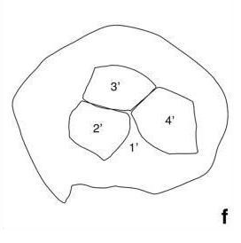

CYSTS LIST
- Alexandrium catenella
- Alexandrium kutnerae
- Alexandrium margalefi
- Alexandrium minutum
- Alexandrium peruvianum
- Alexandrium pseudogoniaulax
- Alexandrium tamarense
- Alexandrium taylori
- Alexandrium spp.
- Archaeperidinium bailongense, cyst of
- Archaeperidinium constrictum, cyst of
- Archaeperidinium minutum, cyst of
- Archaeperidinium monospinum, cyst of
- Archaeperidinium saanichi, cyst of
- Archaeperidinium sp., cyst of
- Ataxiodinium choane
- Ataxiodinium confussum
- Ataxiodinium zevenboomii
- Ataxiodinium sp.
- Biecheleria baltica
- Biecheleria cincta
- Biecheleria sp.
- Bitectatodinium spongium
- Bitectatodinium tepikiense
- Bitectatodinium sp.
- Brigantedinium assymmetricum
- Brigantedinium auranteum
- Brigantedinium cariacoense
- Brigantedinium majusculum
- Brigantedinium simplex
- Brigantedinium sp.
- Caspidinium rugosum
- Cryodinium matsuokai
- Cryodinium sp.
- Cryodinium meridianum
- Dalella chathamensis
- Diplopelta symmetrica, cyst of
- Dubridinium caperatum, cyst of
- Dubridinium cassiculum, cyst of
- Dubridinium cavatum, cyst of
- Dubridinium ulsterum, cyst of
- Dubridinium spp., cyst of
- Echinidinium aculeatum
- Echinidinium bispiniformum
- Echinidinium delicatum
- Echinidinium karaense
- Echinidinium granulatum
- Echinidinium sleipnerensis
- Echinidinium transparantum
- Echinidinium zonneveldiae
- Gymnodinium catenatum, cyst of
- Gymnodinium inusitatum, cyst of
- Gymnodinium microreticulatum, cyst of
- Gymnodinium nolerii, cyst of
- Gymnodinium trapeziforme, cyst of
- Impagidinium aculeatum
- Impagidinium caspienense
- Impagidinium pallidum
- Impagidinium paradoxum
- Impagidinium patulum
- Impagidinium plicatum
- Impagidinium sphaericum
- Impagidinium strialatum
- Impagidinium variaseptum
- Impagidinium velorum
- Islandinium brevispinosum
- Islandinium? cezare
- Islandinium minutum
- Leipokatium invisitatum
- Lejeunecysta acuminate
- Lejeunecysta adeliensis
- Lejeunecysta attenuata
- Lejeunecysta beinenensis
- Lejeunecysta catomus
- Lejeunecysta communis
- Lejeunecysta cowiei
- Lejeunecysta epidoma
- Lejeunecysta fallax
- Lejeunecysta globosa
- Lejeunecysta granosa
- Lejeunecysta hyalina
- Lejeunecysta katatonos
- Lejeunecysta lata
- Lejeunecysta marieae
- Lejeunecysta oliva
- Lejeunecysta paratenella
- Lejeunecysta pulchra
- Lejeunecysta rotunda
- Lejeunecysta sabrina
- Lejeunecysta sp.
- Lingulodinium machaerophorum
- Nematosphaeropsis labyrinthus
- Nematosphaeropsis lemniscata
- Nematosphaeropsis rigida
- Nematosphaeropsis scala
- Nematosphaeropsis spp.
- Nia acanthocysta
- Oblea acathocysta, cyst of
- Operculodinium aguinawense
- Operculodinium centrocarpum
- Operculodinium israelianum
- Operculodinium janduchenei
- Operculodinium longispinigerum
- Operculodinium piaseckii
- Operculodinium tegillatum
- Operculodinium microtriainum
- Operculodinium sp.
- Pentapharsodinium dalei
- Peridinium ponticum
- Polykrikos hatmannii, cyst of
- Polykrikos kofoidii, cyst of
- Polykrikos quadratus, cyst of
- Polykrikos schwartzii, cyst of
- Polykrikos sp., cyst of
- Polysphaeridium zoharyi
- Protoperidinium americanum, cyst of
- Protoperidinium biconicum, cyst of
- Protoperidinium conicoides, cyst of
- Protoperidinium denticulatum, cyst of
- Protoperidinium excentricum, cyst of
- Protoperidinium fukuyoi, cyst of
- Protoperidinium fuzhouense, cyst of
- Protoperidinium humile, cyst of
- Protoperidinium lattissimum, cyst of
- Protoperidinium lewisiae, cyst of
- Protoperidinium monospinum, cyst of
- Protoperidinium nudum, cyst of
- Protoperidinium parthenopes, cyst of
- Protoperidinium punctulatum, cyst of
- Protoperidinium stellatum, cyst of
- Protoperidinium thorianum, cyst of
- Protoperidinium thulensense, cyst of
- Protoperidinium tricingulatum, cyst of
- Pyxidinopsis braboi
- Pyxidinopsis psilata
- Pyxidinopsis reticulata
- Pyxidinopsis reticulata (okhotsk)
- Pyxidinopsis sp.
- Qia_lebouriae
- Quinquecuspis concreta
- Scrippsiella acuminata
- Scrippsiella crystallina
- Scrippsiella erinaceus
- Scrippsiella spinifera
- Scrippsiella triffida
- Scrippsiella trochoidea
- Selenopemphix antarctica
- Selenopemphix armageddonensis
- Selenopemphix brevispinosum
- Selenopemphix brinkhuisii
- Selenopemphix conspicua
- Selenopemphix coronata
- Selenopemphix crenata
- Selenopemphix dionaeacysta
- Selenopemphix islandensis
- Selenopemphix nephroides
- Selenopemphix quanta
- Selenopemphix tholus
- Selenopemphix undulata
- Selenopemphix sp.
- Spiniferites alaskensis
- Spiniferites asperulus
- Spiniferites belerius
- Spiniferites bentorii
- Spiniferites cruciformis
- Spiniferites delicatus
- Spiniferites elongatus
- Spiniferites frigidus
- Spiniferites hainanensis
- Spiniferites hyperacanthus
- Spiniferites lazus
- Spiniferites ludhamensis
- Spiniferites membranaceus
- Spiniferites mirabilis
- Spiniferites multisphaerus
- Spiniferites pachydermus
- Spiniferites pacificus
- Spiniferites ramosus
- Spiniferites spinatus
- Spiniferites splendidus
- Stelladinium abei
- Stelladinium bifurcatum
- Stelladinium denticulatum
- Stelladinium reidii
- Stelladinium robustum
- Stelladinium stellatum
- Stelladinium sp.
- Tectatodinium pellitum
- Trinovantedinium applanatum
- Trinovantedinium ferugnomatum
- Trinovantedinium glorianum
- Trinovantedinium harpagonium
- Trinovantedinium pallidifulvum
- Trinovantedinium variabile
- Trinovantedinium sp.
- Tuberculodinium vancampoae
- Votadinium bengalensis
- Votadinium calvum
- Votadinium concavum
- Votadinium elongatum
- Votadinium nanhaiense
- Votadinium pontifossatum
- Votadinium psilodora
- Votadinium reidii
- Votadinium rhomboideum
- Votadinium spinosum
- Xandarodinium xanthum
ISLANDINIUM MINUTUM
Color: *Brown.
Surface: **Granular.
Shape: *Spherical.
Central body: **29 to 45 um.
Process length: **3.5 to 7 um.
Process: *Acuminate tips. Base circular. **Solid to apiculocavate processes.
Archeopyle: *Apical.
Septa: -
Sulcus: -
Distiguishing characteristics: -
Comparative table: RSBC
DESCRIPTION:
Light to dark brown cyst. Wall thickness b0.5 μm, granulate surface with low verrucae or low coni. Processes are mostly solid to apiculocavate, tapering with a circular cross-section, terminating distally in finely acuminate tips, and separated from one another at their base by about 1.5 to 4.0 μm. Process diameter ranges from about 1.0 to 1.5 μm. (Extracted from Radi et al., 2013).
ECOLOGY:
I. minutum was recorded first in the Arctic Ocean, northern North Atlantic and Bering Sea (e.g., Harland et al., 1980; Matsuoka and Bujak, 1988; Matthiessen, 1995; Kunz-Pirrung, 1998, 1999). It is now known to represent one of the most common RBSCs documented in marine records (Fig. 2). It often dominates assemblages in arctic and subarctic environments such as Baffin Bay (Hamel et al., 2002), the Arctic Ocean (Rochon et al., 1999; Head et al., 2001; Mudie and Rochon, 2001), and the Bering Sea (Radi et al., 2001; Bonnet et al., 2012), although its range extends to mid- and low-latitude environments (e.g., Pospelova et al., 2004, 2005; Radi et al., 2007; Limoges et al., 2010). It is consequently considered to occupy subtropical to polar and estuarine to oceanic environments with SSTs ranging from 0 to 24 °C and from −1.8 to 13 °C in summer and winter respectively. Although its highest abundances are found in regions seasonally covered with sea-ice, some specimens have been found in areas free of ice throughout the year. It tolerates a wide range of SSS (15 to 35 in summer) and primary productivity (50 to 600 g cm−2 year−1) (Extracted from Radi et al., 2013).
IMAGES:
 1 1 |
2 | 3 |
| 4 | 5 | 6 |
| 7 | 8 | 9 |
| 10 | 11 | 12 |
| 13 | 14 | 15 |
| 16 | 17 | 18 |
| 19 |  20 20 |
21 |
| 22 | 23 | 24 |
| 25 | 26 | 27 |
| 28 | 29 | 30 |
| 31 | 32 | 33 |
 34 34 |
35 | 36 |
| 37 | 38 | 39 |
| 40 |  41 41 |
42 |
| 43 | 44 | 45 |
| 46 | 47 | 48 |
| 49 | 50 | 51 |
| 52 | 53 | 54 |
| 55 | 56 | 57 |
| 58 | 59 | 60 |
| 61 | 62 | 63 |
| 64 | 65 |
IMAGES REFERENCE:
1. Islandinium minutum. Kara Sea. (Radi et al., 2013 - Plate 1-1).
2. Islandinium minutum. Kara Sea. (Radi et al., 2013 - Plate 1-2).
3. Islandinium minutum. Specimen from the Bering Sea (SO202-15-4). (Radi et al., 2013 - Plate 1-3).
4. Islandinium minutum.
5. Islandinium minutum. Bright-field photomicrographs NBH317, slide 1, F41/4, optical section. Scale bar: 10 um. (Pospelova et al., 2005 - Figure 6-5).
6. Islandinium minutum. Reworked specimens of Impletosphaeridium clavus recorded from the Cenozoic diamictites (Pliocene) at Ekelof Point, James Ross Island and Cape Lamb diamictite (Pleistocene) from Vega Island, Antarctica, and from Recent (Holocene) sediments of the Beagle Channel, Tierra del Fuego, Argentina. Scale bar: 10 um. UNSP FCB 2347-4, Q46/2 (Amenabar et al., 2014 - Plate 3-14).
7. Islandinium minutum. Photoplate of main dinocyst taxa and palynomorphs identified in this study (Caron et al., 2019 - Figure 2-g)
8. Islandinium minutum. Photomicrographs of heterotrophic dinoflagellate cysts recorded from Jeju Island. Scale bar: 50 um. (Park et al., 2016).
9. Islandinium minutum. Bright-field photomicrographs subsp. barbatum subsp. nov. from sediment of East Siberian Sea. Sample ARA06C-5, depth: 346 m.). Holotype. Process stems are prominently granulate under light microscope. Central body max. diameter 40 um. Upper through lower foci. (Potvin et al., 2018 - Figure 1-A)
10. Islandinium minutum. Bright-field photomicrographs subsp. barbatum subsp. nov. from sediment of East Siberian Sea. Sample ARA06C-5, depth: 346 m.). Holotype. Process stems are prominently granulate under light microscope. Central body max. diameter 40 um. Upper through lower foci. (Potvin et al., 2018 - Figure 1-B)
11. Islandinium minutum. Bright-field photomicrographs subsp. barbatum subsp. nov. from sediment of East Siberian Sea. Sample ARA06C-5, depth: 346 m.). Holotype. Process stems are prominently granulate under light microscope. Central body max. diameter 40 um. Upper through lower foci. (Potvin et al., 2018 - Figure 1-C)
12. Islandinium minutum. Bright-field photomicrographs subsp. barbatum subsp. nov. from sediment of East Siberian Sea. Sample ARA06C-5, depth: 346 m.). Holotype. Process stems are prominently granulate under light microscope. Central body max. diameter 40 um. Upper through lower foci. Showing tracing of apical archeopyle formed by loss of plates 2'-4' plus the canal plate and apical pore complex. (Potvin et al., 2018 - Figure 1-D)
13. Islandinium minutum. Bright-field photomicrographs subsp. barbatum subsp. nov. from sediment of East Siberian Sea. Sample ARA06C-5, depth: 346 m.). Holotype. Process stems are prominently granulate under light microscope. Central body max. diameter 40 um. Upper through lower foci. (Potvin et al., 2018 - Figure 1-E)
14. Islandinium minutum. Bright-field photomicrographs subsp. barbatum subsp. nov. from sediment of East Siberian Sea. Sample ARA06C-5, depth: 346 m.). Holotype. Process stems are prominently granulate under light microscope. Central body max. diameter 40 um. Upper through lower foci. Central body surface faintly granulate except for a smooth ring surrounding process bases. (Potvin et al., 2018 - Figure 1-F)
15. Islandinium minutum. Bright-field photomicrographs subsp. barbatum subsp. nov. from sediment of East Siberian Sea. Kara Sea. Sample BP 97-17, slide 3, EF J52/1. Upper through mid-focus showing surface of central body bearing low verrucae, bacculae and coni except for a smooth ring surrounding some process bases, and barbs on some process stems (arrowed). Central body max. diam. 51 um. Scale bar: 10 um. (Potvin et al., 2018 - Figure 1-G).
16. Islandinium minutum. Bright-field photomicrographs subsp. barbatum subsp. nov. from sediment of East Siberian Sea. Kara Sea. Sample BP 97-17, slide 3, EF J52/1. Upper through mid-focus showing surface of central body bearing low verrucae, bacculae and coni except for a smooth ring surrounding some process bases, and barbs on some process stems (arrowed). Central body max. diam. 51 um. Scale bar: 10 um. (Potvin et al., 2018 - Figure 1-H).
17. Islandinium minutum. Bright-field photomicrographs subsp. barbatum subsp. nov. from sediment of East Siberian Sea. Kara Sea. Sample BP 97-17, slide 3, EF J52/1. Upper through mid-focus showing surface of central body bearing low verrucae, bacculae and coni except for a smooth ring surrounding some process bases, and barbs on some process stems (arrowed). Central body max. diam. 51 um. Scale bar: 10 um. (Potvin et al., 2018 - Figure 1-I).
18. Islandinium minutum. Bright-field photomicrographs subsp. barbatum subsp. nov. from modern sediment of the East Siberian Sea (Sample ARA06C-5, depth: 346 m.). Living cyst. Scale bar: 10 um.(Potvin et al., 2018 - Figure 2-A).
19. Islandinium minutum. Bright-field photomicrographs subsp. barbatum subsp. nov. from modern sediment of the East Siberian Sea (Sample ARA06C-5, depth: 346 m.). Tangential view with increasing magnification illustrating details from the cyst surface and the distribution of processes. Scale bar: 10 um.(Potvin et al., 2018 - Figure 2-B).
20. Islandinium minutum. Bright-field photomicrographs subsp. barbatum subsp. nov. from modern sediment of the East Siberian Sea (Sample ARA06C-5, depth: 346 m.). Tangential view with increasing magnification illustrating details from the cyst surface and the distribution of processes. Scale bar: 10 um.(Potvin et al., 2018 - Figure 2-C).
21. Islandinium minutum. Bright-field photomicrographs subsp. barbatum subsp. nov. from modern sediment of the East Siberian Sea (Sample ARA06C-5, depth: 346 m.). Tangential view with increasing magnification illustrating details from the cyst surface and the distribution of processes. Scale bar: 5 um.(Potvin et al., 2018 - Figure 2-D).
22. Islandinium minutum. Bright-field photomicrographs subsp. barbatum subsp. nov. from modern sediment of the East Siberian Sea (Sample ARA06C-5, depth: 346 m.). Optical section of empty cysts at various magnifications illustrating details from wall and processes. Scale bar: 10 um.(Potvin et al., 2018 - Figure 2-E).
23. Islandinium minutum. Bright-field photomicrographs subsp. barbatum subsp. nov. from modern sediment of the East Siberian Sea (Sample ARA06C-5, depth: 346 m.). Optical section of empty cysts at various magnifications illustrating details from wall and processes. Scale bar: 5 um.(Potvin et al., 2018 - Figure 2-F).
24. Islandinium minutum. Bright-field photomicrographs subsp. barbatum subsp. nov. from modern sediment of the East Siberian Sea (Sample ARA06C-5, depth: 346 m.). Optical section of empty cysts at various magnifications illustrating details from wall and processes. Scale bar: 5 um.(Potvin et al., 2018 - Figure 2-G).
25. Islandinium minutum. Bright-field photomicrographs subsp. barbatum subsp. nov. from modern sediment of the East Siberian Sea (Sample ARA06C-5, depth: 346 m.). Optical section of empty cysts at various magnifications illustrating details from wall and processes. Scale bar: 5 um.(Potvin et al., 2018 - Figure 2-H).
26. Islandinium minutum. Bright-field micrographs of the dinoflagellate cyst Islandinium minutum subsp. minutum from the Labrador Sea (Sample MSM45-2, depth: 506 m.). Mid focus, and successively lower foci of a living cyst. Scale bar: 10 um. (Potvin et al., 2018 - Figure 7-A).
27. Islandinium minutum. Bright-field micrographs of the dinoflagellate cyst Islandinium minutum subsp. minutum from the Labrador Sea (Sample MSM45-2, depth: 506 m.). Mid focus, and successively lower foci of a living cyst. Scale bar: 10 um. (Potvin et al., 2018 - Figure 7-B).
28. Islandinium minutum. Bright-field micrographs of the dinoflagellate cyst Islandinium minutum subsp. minutum from the Labrador Sea (Sample MSM45-2, depth: 506 m.). Mid focus, and successively lower foci of a living cyst. Scale bar: 10 um. (Potvin et al., 2018 - Figure 7-C).
29. Islandinium minutum. SEM micrographs of the dinoflagellate cyst Islandinium minutum subsp. minutum from the East Siberian Sea (Sample ARA06C-5, depth: 346 m.). General view of the cyst with granulate surface and irregularly distributed processes. Scale bar: 10 um. (Potvin et al., 2018 - Figure 7-D).
30. Islandinium minutum. SEM micrographs of the dinoflagellate cyst Islandinium minutum subsp. minutum from the East Siberian Sea (Sample ARA06C-5, depth: 346 m.). Details of the processes with barbs, seen only under SEM. Scale bar: 0.5 um. (Potvin et al., 2018 - Figure 7-E).
31. Islandinium minutum. SEM micrographs of the dinoflagellate cyst Islandinium minutum subsp. minutum from the Labrador Sea (Sample MSM45-2, depth: 506 m.). General view of the cyst with granulate surface and irregularly distributed processes. Scale bar: 10 um. (Potvin et al., 2018 - Figure 7-F).
32. Islandinium minutum. SEM micrographs of the dinoflagellate cyst Islandinium minutum subsp. minutum from the Labrador Sea (Sample MSM45-2, depth: 506 m.). Details of the processes with barbs, seen only under SEM. Scale bar: 2 um. (Potvin et al., 2018 - Figure 7-G).
33. Islandinium minutum. SEM micrographs of the dinoflagellate cyst Islandinium minutum subsp. minutum from the Labrador Sea (Sample MSM45-2, depth: 506 m.). Details of the processes with barbs, seen only under SEM. Scale bar: 0.5 um. (Potvin et al., 2018 - Figure 7-H).
34. Islandinium minutum. SEM micrographs of the dinoflagellate cyst Islandinium minutum subsp. minutum from the East Siberian Sea (Sample ARA06C-5, depth: 346 m.). Details of the processes with barbs, seen only under SEM. Scale bar: 2 um. (Potvin et al., 2018 - Figure 7-I).
35. Islandinium minutum. Bright-field photomicrographs of round brown spiny cysts similar morphologically to I. minutum subsp. barbatum subsp. nov. I. minutum subsp. minutum from modern sediments of the Kara Sea, upper through mid-focus, showing archeopyle formed by loss of plates 2'-4' plus the canal plate and apical pore complex. Processes are densely distributed, relatively short taper to fine points, and their surface appears smooth in light microscopy. Sample BP 97-60, slide 1, EF N36/3. Central body max. diam. 40 um. Scale bar: 10 um. (Potvin et al., 2018 - Figure 8-A).
36. Islandinium minutum. Bright-field photomicrographs of round brown spiny cysts similar morphologically to I. minutum subsp. barbatum subsp. nov. I. minutum subsp. minutum from modern sediments of the Kara Sea, upper through mid-focus, showing archeopyle formed by loss of plates 2'-4' plus the canal plate and apical pore complex. Processes are densely distributed, relatively short taper to fine points, and their surface appears smooth in light microscopy. Sample BP 97-60, slide 1, EF N36/3. Central body max. diam. 40 um. Scale bar: 10 um. (Potvin et al., 2018 - Figure 8-B).
37. Islandinium minutum. Bright-field photomicrographs of round brown spiny cysts similar morphologically to I. minutum subsp. barbatum subsp. nov. I. minutum subsp. minutum from modern sediments of the Kara Sea, upper through mid-focus, showing archeopyle formed by loss of plates 2'-4' plus the canal plate and apical pore complex. Processes are densely distributed, relatively short taper to fine points, and their surface appears smooth in light microscopy. Sample BP 97-60, slide 1, EF N36/3. Central body max. diam. 40 um. Scale bar: 10 um. (Potvin et al., 2018 - Figure 8-C).
38. Islandinium minutum. Bright-field photomicrographs of round brown spiny cysts similar morphologically to I. minutum subsp. barbatum subsp. nov. Islandinium? cezare from modern sediments of the Kara Sea, upper and mid-focus. Process stems smooth, and minutely expanded distally with recurved elements. Sample BP97-50, slide 3, EF S48/S47. Central body max. diam. = 29 um. Scale bar: 10 um. (Potvin et al., 2018 - Figure 8-D).
39. Islandinium minutum. Bright-field photomicrographs of round brown spiny cysts similar morphologically to I. minutum subsp. barbatum subsp. nov. Islandinium? cezare from modern sediments of the Kara Sea, upper and mid-focus. Process stems smooth, and minutely expanded distally with recurved elements. Sample BP97-50, slide 3, EF S48/S47. Central body max. diam. = 29 um. Scale bar: 10 um. (Potvin et al., 2018 - Figure 8-E).
40. Islandinium minutum. Bright-field photomicrographs of round brown spiny cysts similar morphologically to I. minutum subsp. barbatum subsp. nov. Islandinium? cezare holotype from the Upper Pleistocene of Quebec, Canada, upper focus. Process stems smooth, and minutely expanded distally with recurved elements; central body surface granulate. Sample SC 86-09 (199-3) B, EF, B15/4. Central body max. diam. 28 um. Scale bar: 10 um. (Potvin et al., 2018 - Figure 8-F).
41. Islandinium minutum. Bright-field photomicrographs of round brown spiny cysts similar morphologically to I. minutum subsp. barbatum subsp. nov. Echinidinium karaense. Holotype, upper foci. Surface bears short thin processes as well as longer wider ones. Larger processes are mostly hollow and some have minute distal terminations that flare outwards. Simple branching may occur on some processes. MPK12443, sample BP 97-52, slide 2, EF E40/2. Central body max. diam. 32 um. Scale bar: 10 um.(Potvin et al., 2018 - Figure 8-G).
42. Islandinium minutum. Bright-field photomicrographs of round brown spiny cysts similar morphologically to I. minutum subsp. barbatum subsp. nov. Echinidinium karaense. Paratype, mid foci. Surface bears short thin processes as well as longer wider ones. Larger processes are mostly hollow and some have minute distal terminations that flare outwards. Simple branching may occur on some processes. MPK12443, sample BP 97-52, slide 2, EF E40/2. Central body max. diam. 32 um. Scale bar: 10 um.(Potvin et al., 2018 - Figure 8-H).
43. Islandinium minutum. Bright-field photomicrographs of round brown spiny cysts similar morphologically to I. minutum subsp. barbatum subsp. nov. Echinidinium karaense. Paratype, mid foci. Surface bears short thin processes as well as longer wider ones. Larger processes are mostly hollow and some have minute distal terminations that flare outwards. Simple branching may occur on some processes (arrowed). MPK12444, sample BP 97-50, slide 3, EF L40/0. Central body max. diam. = 31 um. Scale bar: 10 um. (Potvin et al., 2018 - Figure 8-I).
44. Islandinium minutum. Photomicrographs and tracings. Holotype from Beaufort Sea (MPK1306; Sample CSA 1780, G39/4; central body diameter: 50 um.). Equatorial view of upper surface (Head et al., 2001 - Plate 1-a).
45. Islandinium minutum. Photomicrographs and tracings. Holotype from Beaufort Sea (MPK1306; Sample CSA 1780, G39/4; central body diameter: 50 um.). Mid-focus showing angular principal archeopyle suture at top, asmarked by an arrow (Head et al., 2001 - Plate 1-b).
46. Islandinium minutum. Photomicrographs and tracings. Holotype from Beaufort Sea (MPK1306; Sample CSA 1780, G39/4; central body diameter: 50 um.). Magnified view of upper surface (Head et al., 2001 - Plate 1-c).
47. Islandinium minutum. Photomicrographs and tracings. Epitype from the Kara Sea (MPK12435; sample BP97-39, slide 1, M51/0; central body maximum diameter 44 um.). Apical view of successively lower foci from upper surface. Through mid focus (Head et al., 2001 - Plate 1-d).
48. Islandinium minutum. Photomicrographs and tracings. Epitype from the Kara Sea (MPK12435; sample BP97-39, slide 1, M51/0; central body maximum diameter 44 um.). Apical view of successively lower foci from upper surface. (Head et al., 2001 - Plate 1-e).
49. Islandinium minutum. Photomicrographs and tracings. Epitype from the Kara Sea (MPK12435; sample BP97-39, slide 1, M51/0; central body maximum diameter 44 um.). Apical view of successively lower foci from upper surface. (Head et al., 2001 - Plate 1-f).
50. Islandinium minutum. Photomicrographs and tracings. Epitype from the Kara Sea (MPK12435; sample BP97-39, slide 1, M51/0; central body maximum diameter 44 um.). Apical view of successively lower foci from upper surface. Showing archeopyle formed by loss of three apical plates but with canal plate ('cp' in h and i) still in place. (Head et al., 2001 - Plate 1-g).
51. Islandinium minutum. Photomicrographs and tracings. Epitype from the Kara Sea (MPK12435; sample BP97-39, slide 1, M51/0; central body maximum diameter 44 um.). Apical view of successively lower foci from upper surface. (Head et al., 2001 - Plate 1-h).
52. Islandinium minutum. Photomicrographs and tracings. Epitype from the Kara Sea (MPK12435; sample BP97-39, slide 1, M51/0; central body maximum diameter 44 um.). Apical view of successively lower foci from upper surface. Through mid focus (Head et al., 2001 - Plate 1-i).
53. Islandinium minutum. Photomicrographs and tracings. Specimen from the Kara Sea (MPK12436; sample BP97-21, slide 1, L31/2; central body maximum diameter 43 um.). Left-lateral view of upper surface, showing distinctive pointed spur on the left-lateral side of the principal archeopyle suture at the contact between plates 2 and 3 along what is otherwise a nearly straight line (Head et al., 2001 - Plate 1-j).
54. Islandinium minutum. Photomicrographs and tracings. Specimen from the Kara Sea (MPK12436; sample BP97-21, slide 1, L31/2; central body maximum diameter 43 um.). Left-lateral view of upper surface, showing distinctive pointed spur on the left-lateral side of the principal archeopyle suture at the contact between plates 2 and 3 along what is otherwise a nearly straight line (Head et al., 2001 - Plate 1-k).
55. Islandinium minutum. Photomicrographs and tracings. Specimen from the Kara Sea (MPK12436; sample BP97-21, slide 1, L31/2; central body maximum diameter 43 um.). Slightly lower focus showing apparent accesory suture between 1 and 1" (Head et al., 2001 - Plate 1-l).
56. Islandinium minutum. Photomicrographs and tracings. Specimen from the Kara Sea (MPK12436; sample BP97-21, slide 1, L31/2; central body maximum diameter 43 um.). Slightly lower focus showing apparent accesory suture between 1 and 1" (Head et al., 2001 - Plate 1-m).
57. Islandinium minutum. Photomicrographs and tracings. From the Kara Sea (MPK12437; sample BP97-50, slide 1, N36/3; central body maximum diameter 40 um.); apical view of successively lower foci through upper surface showing archeopyle formed by loss of three apical plates anda canal plate. (Head et al., 2001 - Plate 2-a).
58. Islandinium minutum. Photomicrographs and tracings. From the Kara Sea (MPK12437; sample BP97-50, slide 1, N36/3; central body maximum diameter 40 um.); apical view of successively lower foci through upper surface showing archeopyle formed by loss of three apical plates anda canal plate. (Head et al., 2001 - Plate 2-b).
59. Islandinium minutum. Photomicrographs and tracings. From the Kara Sea (MPK12437; sample BP97-50, slide 1, N36/3; central body maximum diameter 40 um.); apical view of successively lower foci through upper surface showing archeopyle formed by loss of three apical plates anda canal plate. (Head et al., 2001 - Plate 2-c).
60. Islandinium minutum. Photomicrographs and tracings. From the Kara Sea (MPK12437; sample BP97-50, slide 1, N36/3; central body maximum diameter 40 um.); apical view of successively lower foci through upper surface showing archeopyle formed by loss of three apical plates anda canal plate. (Head et al., 2001 - Plate 2-d).
61. Islandinium minutum. Photomicrographs and tracings. From the Kara Sea (MPK12438; sample BP97-52, slide 4, O43/1; central body maximum diameter 42 um.); antapical view of lower surface showing all plates in place, but demarcated by folds and partial separation. (Head et al., 2001 - Plate 2-e).
62. Islandinium minutum. Photomicrographs and tracings. From the Kara Sea (MPK12438; sample BP97-52, slide 4, O43/1; central body maximum diameter 42 um.); antapical view of lower surface showing all plates in place, but demarcated by folds and partial separation. (Head et al., 2001 - Plate 2-f).
63. Islandinium minutum. Photomicrographs and tracings. From the Kara Sea (MPK12439; sample BP97-21, slide 1, P30/3; central body maximum diameter 41 um.); right lateral view showing upper surface with 4 in place. (Head et al., 2001 - Plate 2-g).
64. Islandinium minutum. Photomicrographs and tracings. From the Kara Sea (MPK12439; sample BP97-21, slide 1, P30/3; central body maximum diameter 41 um.); right lateral view showing slightly lower focus. (Head et al., 2001 - Plate 2-h).
65. Islandinium minutum. Photomicrographs and tracings. From the Kara Sea (MPK12439; sample BP97-21, slide 1, P30/3; central body maximum diameter 41 um.) (Head et al., 2001 - Plate 2-i).
66. Islandinium minutum. Photomicrographs and tracings. From the Kara Sea (MPK12439; sample BP97-21, slide 1, P30/3; central body maximum diameter 41 um.); right lateral view showing an enlarged view of 3, which is suspended upside-down above the upper surface of the cyst at the position given in (i), demonstrating separate loss of all three apical plates during archeopyle formation. (Head et al., 2001 - Plate 2-j).
BIBLIOGRAPHY:
- Amenábar, C. R., Candel, M. S., & Guerstein, G. R. (2014). Small Antarctic Late Cretaceous chorate dinoflagellate cysts: biological and palaeoenvironmental affinities. Palynology, 38(2), 303-323.
- Caron, M., Rochon, A., Montero‐Serrano, J. C., & St‐Onge, G. (2019). Evolution of sea‐surface conditions on the northwestern Greenland margin during the Holocene. Journal of Quaternary Science, 34(7), 569-580.
- Head, M. J., Harland, R., & Matthiessen, J. (2001). Cold marine indicators of the late Quaternary: the new dinoflagellate cyst genus Islandinium and related morphotypes. Journal of Quaternary Science: Published for the Quaternary Research Association, 16(7), 621-636.
- Park, B., Kim, Y., & Yoon, Y. H. (2016). Distribution of dinoflagellate cysts in surface sediments of the coastal areas around Jeju Island, Korea. Journal of the Korean Society for Marine Environment & Energy, 19(4), 310-321.
- Pospelova, V., Chmura, G. L., Boothman, W. S., & Latimer, J. S. (2005). Spatial distribution of modern dinoflagellate cysts in polluted estuarine sediments from Buzzards Bay (Massachusetts, USA) embayments. Marine Ecology Progress Series, 292, 23-40.
- Potvin, É., Kim, S. Y., Yang, E. J., Head, M. J., Kim, H. C., Nam, S. I., ... & Kang, S. H. (2018). Islandinium minutum subsp. barbatum subsp. nov.(Dinoflagellata), a New Organic‐Walled Dinoflagellate Cyst from the Western Arctic: Morphology, Phylogenetic Position Based on SSU rDNA and LSU rDNA, and Distribution. Journal of Eukaryotic Microbiology, 65(6), 750-772.
- Radi, T., Bonnet, S., Cormier, M. A., de Vernal, A., Durantou, L., Faubert, É., ... & Van Nieuwenhove, N. (2013). Operational taxonomy and (paleo-) autecology of round, brown, spiny dinoflagellate cysts from the Quaternary of high northern latitudes. Marine Micropaleontology, 98, 41-57. (**)
- Zonneveld, K. A., & Pospelova, V. (2015). A determination key for modern dinoflagellate cysts. Palynology, 39(3), 387-409. (*)